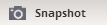
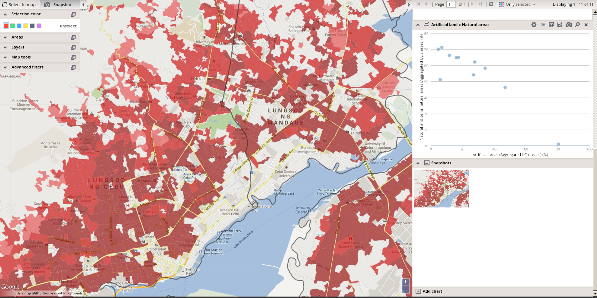

The Snapshot tool enables you to create snapshot of the current map layout.
You can modify the map layout according to your requirements using tools incorporated in the left section and click the “Snapshot” icon  located in the header of the panel. The snapshot of the current map composition is then created and appears in the snapshot section of the chart panel. You can enlarge it, save it as graphics or delete it, using the functionalities of the snapshot panel.
